Americká zahraniční politika, transatlantické vztahy a energetická bezpečnost. Odborný asistent na Metropolitní univerzitě Praha.
Státy nepotřebují jen fyzické bezpečí, ale i stabilní představu o tom, kdo jsou. Když se ta představa naruší, chovají se způsobem, který z hlediska mocenské kalkulace vypadá iracionálně.
To je východisko teorie ontologické bezpečnosti, se kterou pracuji. Současnou transatlantickou krizi proto nečtu jako spor o rozpočty a kapacity. Ptám se, čím Evropa je, když se přestane spoléhat na americkou záruku.
Doktorát 2024, Univerzita Hradec Králové — zahraniční politika Nixonovy administrativy, trojúhelníková diplomacie a summity v Pekingu a Moskvě 1972.
US foreign policy, transatlantic relations and energy security. Assistant professor at Metropolitan University Prague.
States need more than physical safety — they need a stable sense of who they are. When that sense is disturbed, they behave in ways that look irrational in terms of pure power calculation.
That is the starting point of ontological security theory, which my research works with. So I do not read the current transatlantic crisis as an argument about budgets and capabilities. The question is what Europe is once it stops relying on the American guarantee.
PhD 2024, University of Hradec Králové — the foreign policy of the Nixon administration, triangular diplomacy and the 1972 Beijing and Moscow summits.
Pro novináře
For journalists
+420 606 606 321 · david.marecek@mup.cz
Komentuji česky a anglicky. Na telefon i e-mail reaguji zpravidla do hodiny; v pracovní dny jsem k dispozici pro živé vstupy.
Ke kterým tématům se vyjadřuji
- Americká zahraniční i domácí politika
- Transatlantické vztahy a NATO
- Jednání o Ukrajině a role Spojených států
Ke kterým ne
- Česká domácí politika
- Vnitropolitické dění v jednotlivých evropských zemích
David Mareček, odborník na americkou zahraniční politiku a transatlantické vztahy, Metropolitní univerzita Praha
Fotografii v tiskovém rozlišení najdete zde.
{kind=link}
+420 606 606 321 · david.marecek@mup.cz
Available for comment in Czech and English. I normally reply within the hour and am available for live broadcast on working days.
Subjects I comment on
- US foreign and domestic politics
- Transatlantic relations and NATO
- Ukraine negotiations and the American role
Subjects I decline
- Czech domestic politics
- Domestic politics of individual European states
David Mareček, expert on US foreign policy and transatlantic relations, Metropolitan University Prague
A print-resolution photograph is available here.
Výzkum
Research
Ontologická bezpečnost a spojenectví
Jak státy udržují stabilní obraz sebe sama uvnitř spojenectví — a co se stane, když se o něj někdo pokusí vyjednávat.
Americká zahraniční politika za studené války
Nixonova administrativa, détente a trojúhelníková diplomacie; americká reakce na povstání ve východním bloku.
Energetická bezpečnost Česka a Slovenska
Srovnání českých a slovenských energetických narativů od roku 2014.
Ontological security and alliances
How states hold on to a stable sense of themselves inside an alliance — and what happens when someone tries to negotiate over it.
US foreign policy in the Cold War
The Nixon administration, détente and triangular diplomacy; the American response to uprisings in the Eastern Bloc.
Czech and Slovak energy security
A comparison of Czech and Slovak energy security narratives since 2014.
Konference
Conferences
Vybraná vystoupení na mezinárodních konferencích v roce 2026.
Selected papers at international conferences in 2026.
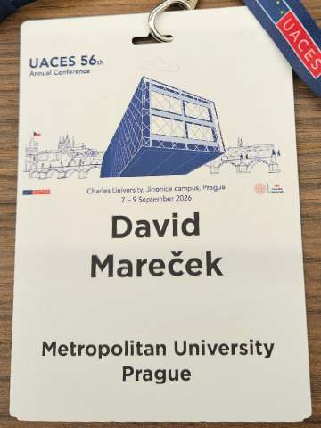
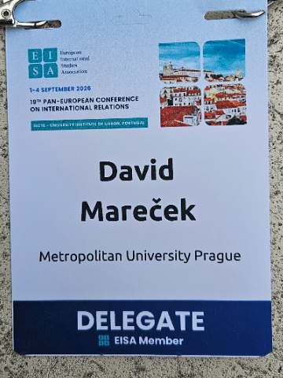
56. výroční konference UACES
Univerzita Karlova, Praha, 7.–9. září 2026. Dva příspěvky: „Living the Polycrisis (2022–2026): Everyday Ontological (In)security and the Construction of Europe in Czechia and Slovakia“ a „Losing the Anchor: Ontological Insecurity and the Transformation of Czech and Polish Atlanticism“.
19. Panevropská konference o mezinárodních vztazích (EISA PEC 2026)
Lisabon, 1.–4. září 2026. „Nuclear Umbrellas and Exposed Selves: Semiotics of Anxiety and Threats to European Ontological Security after 2022“.
New Ordering? World Politics and the Future of Global Challenges
University of Leeds, květen 2026. „Re-Ordering Security: Ontological Security, U.S. Credibility, and Europe after 2022“.
56th UACES Annual Conference
Charles University, Prague, 7–9 September 2026. Two papers: "Living the Polycrisis (2022–2026): Everyday Ontological (In)security and the Construction of Europe in Czechia and Slovakia" and "Losing the Anchor: Ontological Insecurity and the Transformation of Czech and Polish Atlanticism".
19th Pan-European Conference on International Relations (EISA PEC 2026)
Lisbon, 1–4 September 2026. "Nuclear Umbrellas and Exposed Selves: Semiotics of Anxiety and Threats to European Ontological Security after 2022".
New Ordering? World Politics and the Future of Global Challenges
University of Leeds, May 2026. "Re-Ordering Security: Ontological Security, U.S. Credibility, and Europe after 2022".
Publikace
Publications
Články v recenzovaných časopisech
Mareček, D. (2024). Zahraniční politika Spojených států vůči východnímu bloku během povstání v Polsku a Maďarsku. Hledání střední cesty. Studia historica Brunensia, 71(1), 25–50. doi:10.5817/SHB2024-1-2
Mareček, D. (2023). The Path to the Unexpected Partnership of Nixon and Kissinger in 1969. Historica Olomucensia, (1), 35–50. ISSN 1803-9561.
Mareček, D. (2021). Bush's ‚Beyond Containment' Strategy toward the Eastern Bloc in 1989 within the US Foreign Policy Context. Politics in Central Europe, 17(2), 367–392. ISSN 1801-3422.
Kapitoly a příspěvky ve sbornících
Mareček, D. (2022). Oficiální návštěva prezidenta George H. W. Bushe v Polsku a Maďarsku v rámci utváření politiky „beyond containment". In Vita Trans Historiam. ISBN 978-80-558-1928-0.
Mareček, D. Přelomový summit v Pekingu v roce 1972 v americkém a československém tisku. In České, slovenské a československé dějiny 20. století XVIII. ISBN 978-80-7435-918-7.
Mareček, D. Politika détente v rámci české a světové historiografie. In České, slovenské a československé dějiny 20. století XVII. ISBN 978-80-7435-904-0.
Peer-reviewed articles
Mareček, D. (2024). Zahraniční politika Spojených států vůči východnímu bloku během povstání v Polsku a Maďarsku. Hledání střední cesty [US foreign policy towards the Eastern Bloc during the uprisings in Poland and Hungary]. Studia historica Brunensia, 71(1), 25–50. doi:10.5817/SHB2024-1-2
Mareček, D. (2023). The Path to the Unexpected Partnership of Nixon and Kissinger in 1969. Historica Olomucensia, (1), 35–50. ISSN 1803-9561.
Mareček, D. (2021). Bush's 'Beyond Containment' Strategy toward the Eastern Bloc in 1989 within the US Foreign Policy Context. Politics in Central Europe, 17(2), 367–392. ISSN 1801-3422.
Chapters and conference volumes
Mareček, D. (2022). Oficiální návštěva prezidenta George H. W. Bushe v Polsku a Maďarsku v rámci utváření politiky „beyond containment" [President George H. W. Bush's official visit to Poland and Hungary]. In Vita Trans Historiam. ISBN 978-80-558-1928-0.
Mareček, D. Přelomový summit v Pekingu v roce 1972 v americkém a československém tisku [The 1972 Beijing summit in the American and Czechoslovak press]. In České, slovenské a československé dějiny 20. století XVIII. ISBN 978-80-7435-918-7.
Mareček, D. Politika détente v rámci české a světové historiografie [Détente in Czech and international historiography]. In České, slovenské a československé dějiny 20. století XVII. ISBN 978-80-7435-904-0.
Média
Media
Výběr z komentářů pro česká a slovenská média. Aktualizováno k září 2026.
Selected commentary for Czech and Slovak media. Updated September 2026.
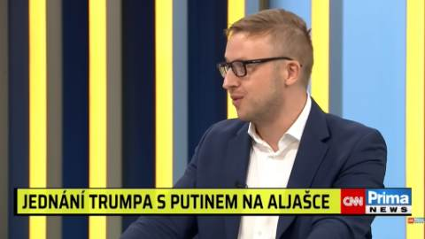
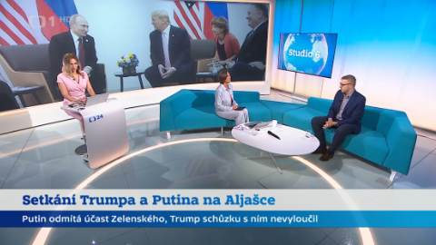
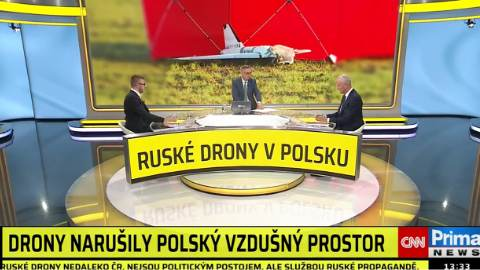
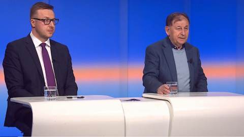
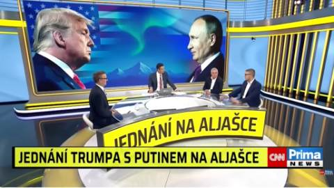
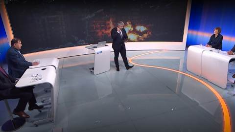
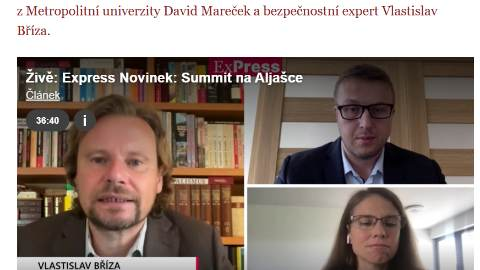
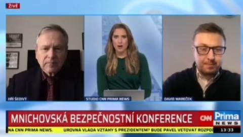
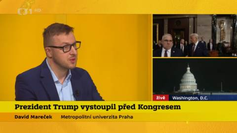
- 3. 9. 2026Eskalující konflikt mezi USA a ÍránemČT24 — Studio 6
- 2. 9. 2026„Budeme postupovat pouze vpřed.“ Putin chce zřejmě eskalovat agresiČT24
- 27. 8. 2026Analytik David Mareček o aktuálním dění na UkrajiněČT24 — samostatný rozhovor
- 31. 7. 2026Trump mluví o dohodě o odzbrojení HamásuČT24
- 17. 7. 2026Trump nemá moc na to, aby zrušil vysílání CNN, ale podkopává demokratické instituceČeský rozhlas Plus · iROZHLAS
- 7. 7. 2026Summit NATO v AnkařeČT24 — Studio 6
- 23. 6. 2026Skončilo první kolo jednání mezi USA a ÍránemČT24 — Studio 6
- 17. 6. 2026Dohoda mezi Spojenými státy a ÍránemČT24 — Studio 6
- 10. 6. 2026USA provedly nové údery na ÍránČT24 — Studio 6
- 4. 6. 2026Vyjednávání mezi Íránem a USAČT24 — Studio 6
- 25. 5. 2026Trumpovy otočky s Íránem pokračují, mír blízko neníCNN Prima News
- 24. 5. 2026Memorandum s Íránem je téměř dojednanéČT24 — Studio ČT24
- 7. 5. 2026Dva drony vletěly do Lotyšska, jednání mezi USA a ÍránemČT24 — Studio 6
- 7. 5. 2026Na územie Lotyšska dopadli dronySTVR — Svet 24 (Slovensko)
- 7. 5. 2026V Lotyšsku se zřítily dva cizí dronyČT24
- 2. 5. 2026Írán předložil USA nový návrh na ukončení válkyČT24 — Studio 6 víkend
- 27. 4. 2026Útočník na Trumpa se z dříve klidného učitele radikalizovalČeský rozhlas Plus · iROZHLAS
- 21. 4. 2026Dvoutýdenní příměří mezi USA a ÍránemČT24 — Studio 6
- 18. 3. 2026Význam Hormuzského průlivu · Oprava ropovodu Družba90' ČT24 — host ve studiu
- 17. 3. 2026Trump se vysmíval Británii, teď spojence opět chceČeský rozhlas Radiožurnál · iROZHLAS
- 25. 2. 2026Polední publicistika: Vnitropolitický projev TrumpaČeský rozhlas Radiožurnál · Plus
- 20. 12. 2025Ukrajinci jednali s AmeričanyČT24
- 20. 12. 2025USA a Ukrajina opět jednají o mírovém plánuČT24 — Studio 6 víkend
- 21. 11. 2025Americký návrh mírového plánu na UkrajiněČT24 — Studio 6
- 18. 10. 2025Trump a Zelenskyj jednali v Bílém doměČT24 — Studio 6 víkend
- 26. 9. 2025Trump nepovolí anexi Západního břehuČT24 — Studio 6
- 11. 9. 2025Ruské drony nad polským územímČT24 — Studio 6
- 27. 8. 2025Aktuální dění v USAČT24 — Studio 6
- 16. 8. 2025Express Novinek: summit na AljašceNovinky.cz
- 14. 8. 2025Rozhovory 24 s analytikom o samite Trump–PutinJOJ 24 (Slovensko)
- 13. 8. 2025Setkání Trumpa a Putina na AljašceČT24 — Studio 6
- 23. 7. 2025Rusko-ukrajinská jednání o příměříČT24 — Studio ČT24
- 14. 6. 2025NATO and EU, Ukraine's minority issueGlobal Digest Media
- 3. 6. 2025Rozhovory Ukrajiny a Ruska v IstanbuluČT24 — Studio 6
- 9. 5. 2025Fico zůstal na moskevské přehlídce zastrčenýCNN Prima News
- 1. 5. 2025Trump a jeho lidé jsou proti Rusům nezkušeníCNN Prima News
- 25. 3. 2025Průlom v jednáních? USA uzavřely s Ruskem i Ukrajinou dohoduCNN Prima News
- 5. 3. 2025Prezident Trump vystoupil před KongresemČT24 — Studio 6
- 20. 1. 2025Nová geopolitická situácia: Česko a Spojené štátyAktuality.sk (Slovensko)
- 20. 1. 2025Mareček: Trump môže Česku priniesť aj výhody, je však nevyspytateľnýTeraz.sk (Slovensko)
Výuka
Teaching
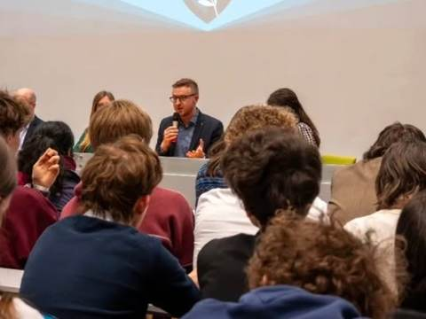
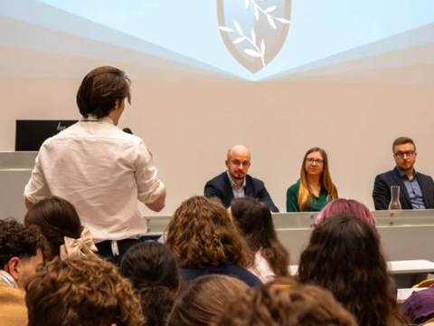
Na Metropolitní univerzitě Praha učím kurzy zaměřené na globální bezpečnostní otázky, mezinárodní organizace, zahraniční politiku Spojených států a americký politický systém.
Vedu bakalářské a diplomové práce. Pokud uvažujete o práci na americké zahraniční politice, transatlantických vztazích nebo o použití teorie ontologické bezpečnosti na konkrétní případ, ozvěte se — nejlépe s odstavcem o tom, co vás na tématu zajímá.
At Metropolitan University Prague I teach courses on global security, international organisations, US foreign policy and the American political system.
I supervise bachelor's and master's theses. If you are considering a thesis on US foreign policy, transatlantic relations, or applying ontological security theory to a specific case, write to me — ideally with a paragraph on what draws you to the subject.